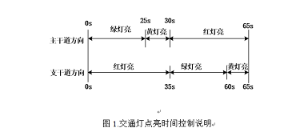

设计一个交通控制器，用LED显示灯表示交通状态，并以7段数码显示器显示当前状态剩余秒数。主干道 绿灯亮时，支干道红灯亮；反之亦然，二者交替允许通行，主干道每次放行35s，支干道每次放行25s。每 次由绿灯变为红灯的过程中，亮光的黄灯作为过渡，黄灯的时间为5s。能进行特殊 状态显示，特殊状态时东西、南北路口均显示红灯状态。用LED灯显示倒计时，并且能实现总体清零功 能，计数器由初始状态开始计数，对应状态的显示灯亮。能实现特殊状态的功能显示，
1．GW48EDA/SOPC+PK2实验系统。
本次设计是针对十字路口，进行南北和东西直行情况下交通灯控制。设定东西方向为 主干道方向，根据交通灯的亮的规则，在初始状态下四个方向的都为红灯亮启，进入 正常工作状态后，当主干道上绿灯亮时，支干道上红灯亮，持续35S后，主干道和支干道 上的黄灯都亮启，持续5S后，主干道上红灯亮启，支干道上绿灯亮启持续25S，之后主干道和 支干道上的黄灯都亮启5s，一个循环完成。循环往复的直行这个过程。其过程如下图所示：
1．做好预设计要求同学们在进入实验室之前先进行程序设计，并认真对所设计的的电路进行可行性论证，拟定实验（调试、测试）步骤。
2． 用2-4学时的时间在实验室里利用实验箱上的现有资源搭构电路并进行实验，直到成功为止。
3． 成实验报告。包括以下内容：
① 实验题目，功能（指标）要求。
② 电路原理图及程序设计源码。
③ 工作原理简述。
④ 调试过程及步骤，测试结果。
状态机要靠计数器为减为0时才能更换为下一个姿态；
计数器的初始值又必须根据状态机的状态进行不同的变化；
这个变化利用交通灯控制电路来进行管理。控制电路根据状态机的状态设置计数器的初始值，完成不同状态的不同延时工作，并干道与支道三色灯的开与关，并将显示时间显示出来。